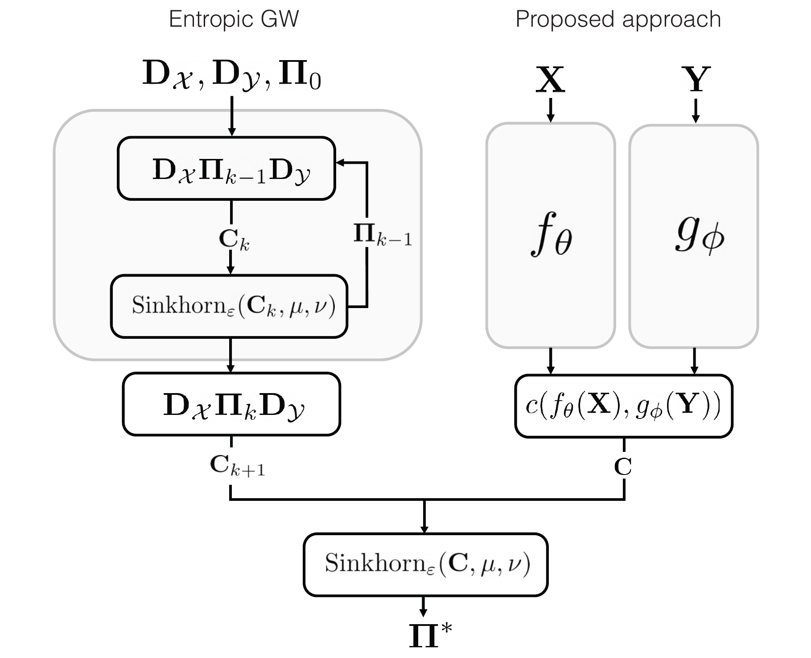
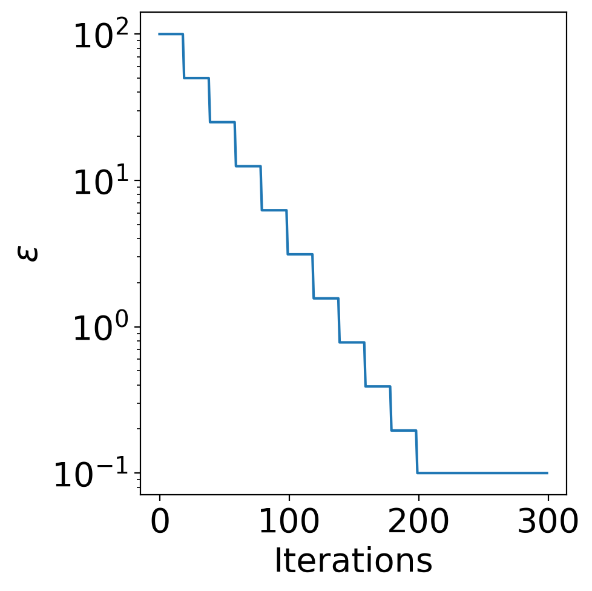
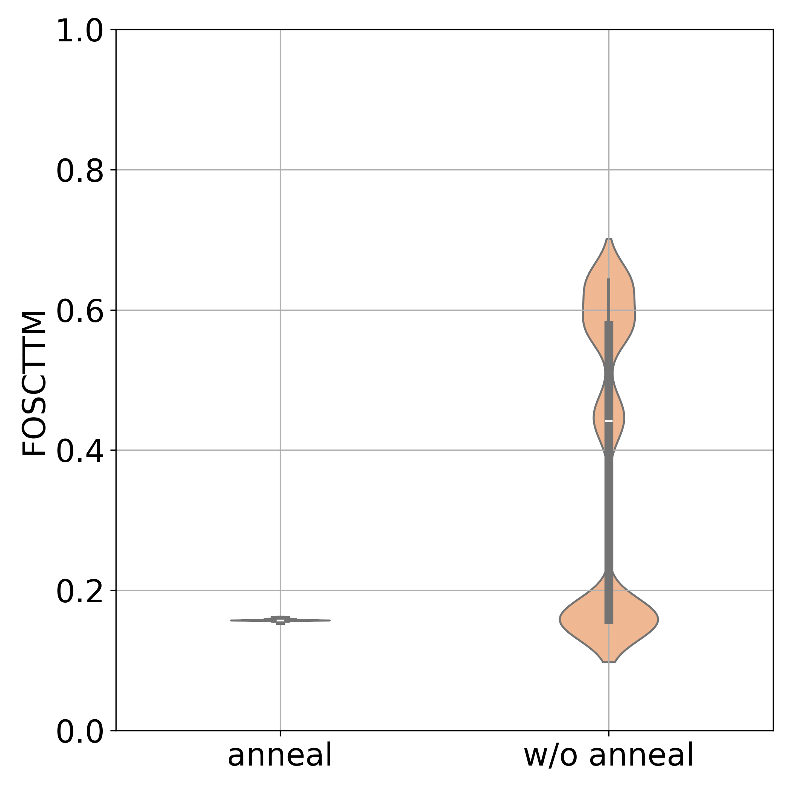
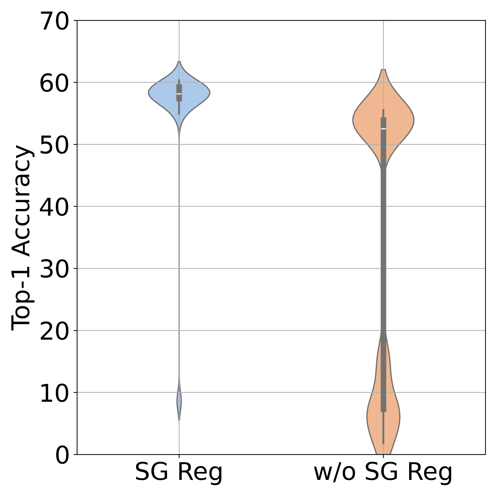
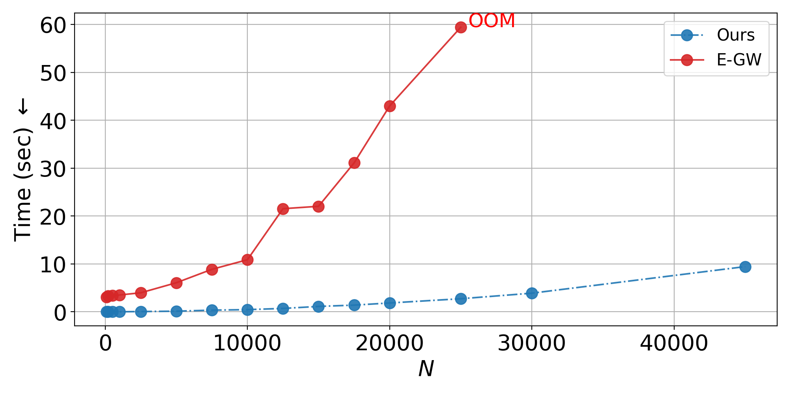
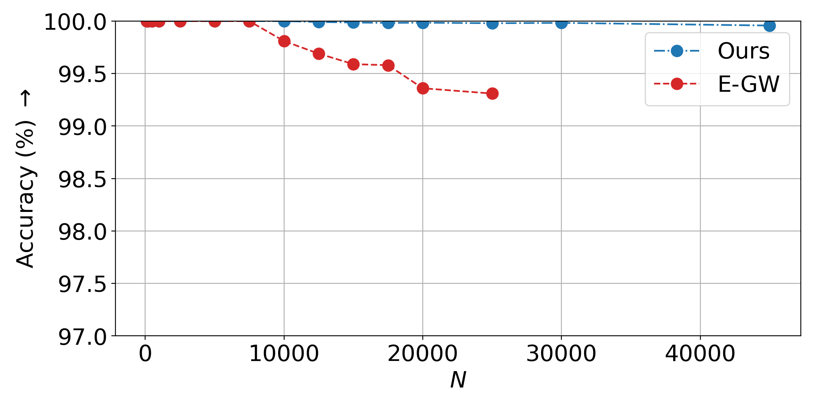
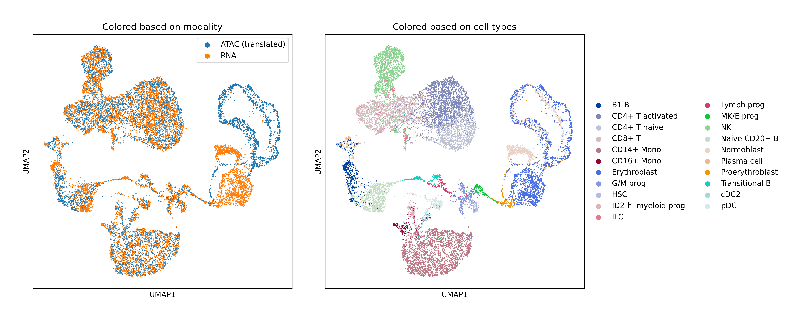
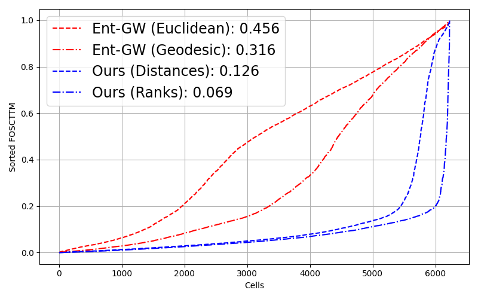
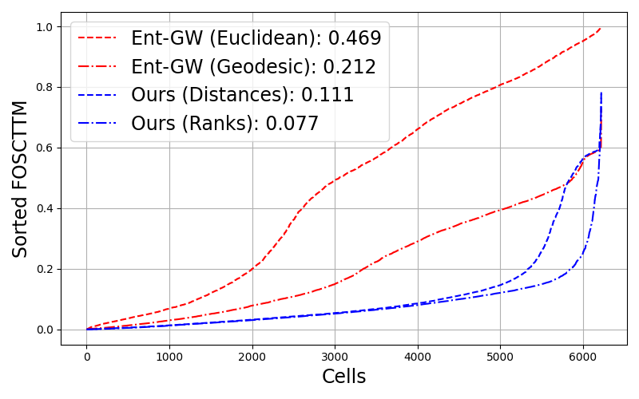

Scalable Unsupervised Alignment of General Metric and Non-Metric Structures
Instead of solving the NP-hard quadratic assignment directly, learn an embedding whose simple optimal-transport problem has the same minimizer — yielding an inductive, scalable Gromov-Wasserstein solver
Aligning data from different domains — most notably experimental readouts in single-cell multiomics — can be cast as minimizing the disagreement of pairwise distances, a quadratic assignment problem (QAP) closely related to the Gromov-Hausdorff and Gromov-Wasserstein distances and known to be NP-hard. Rather than solving the QAP directly with entropic or low-rank regularization on the permutation, this work learns a related, well-scalable linear assignment problem (an optimal-transport problem) whose solution is also a minimizer of the QAP. The cost of that transport problem is implicitly parametrized by neural embeddings of the two domains, making the solver inductive: at inference it only needs to solve a single entropic-OT problem on the learned embeddings. A differentiable-ranking variant extends the framework to general non-metric dissimilarities. The method reaches state-of-the-art results on synthetic data, neural latent spaces, and single-cell multiomics while remaining conceptually and computationally simple.
Overview
Unsupervised alignment asks for a point-wise correspondence between two sets of samples that are related yet not directly comparable — non-rigid shapes in computer vision, unlabeled measurements in signal processing, or latent spaces of independently trained neural networks. The motivating application here is single-cell multiomics: most sequencing assays are invasive, so different molecular profiles (for example gene expression and chromatin accessibility) are typically measured on different cells, and integrating them computationally is essential to understanding joint regulatory mechanisms.
Using the language of the Gromov-Hausdorff (GH) (Gromov et al. 1999) and Gromov-Wasserstein (GW) (Mémoli 2011) distances, alignment becomes the problem of finding an assignment that preserves pairwise distances — an assignment invariant to distance-preserving transformations of either domain. GH seeks an exact permutation and is a quadratic assignment problem (QAP), which is NP-hard (Burkard et al. 1998); GW relaxes this to a soft assignment but is still a quadratic, hard-to-minimize objective. The central idea of this paper is to sidestep the QAP entirely: learn a simple linear assignment problem — an optimal-transport (OT) problem — whose minimizer coincides with that of the GW problem.

From a quadratic to a learned linear problem
For two point sets with pairwise distance matrices \mathbf{D}_\mathcal{X}, \mathbf{D}_\mathcal{Y} \in \mathbb{R}^{N\times N} and discrete measures \mu, \nu, the (squared) Gromov-Wasserstein distance over the couplings U(\mu,\nu) is
d^2_{\mathrm{GW}} = \min_{\boldsymbol{\Pi} \in U(\mu,\nu)} \bigl\| \mathbf{D}_\mathcal{X} - \boldsymbol{\Pi}\, \mathbf{D}_\mathcal{Y}\, \boldsymbol{\Pi}^\top \bigr\|_{\mathrm{F}}^2 ,
which is quadratic in the assignment \boldsymbol{\Pi} — hence the QAP label. The standard entropic GW solver (Solomon et al. 2016; Peyré et al. 2019) attacks it by iteratively linearizing the objective and projecting onto U(\mu,\nu) with an entropy-regularized OT (\epsilon-OT) solve, the Sinkhorn algorithm (Cuturi 2013). Each outer step is therefore a full OT problem, which becomes expensive quickly.
ott-jax (Cuturi et al. 2022) runs out of memory for N>25000, while the CPU-based POT implementation is already intractable for N>8000.The proposed framework asks a different question: is there an \epsilon-OT problem whose solution coincides with the entropic-GW minimizer? Rather than optimizing a free cost matrix \mathbf{C} — which is unbounded, unstable, and transductive — the cost is implicitly parametrized through learned embeddings of the pointwise features. With f_\theta and g_\phi neural networks embedding \mathbf{X} and \mathbf{Y}, the objective becomes a bilevel problem,
\min_{\theta,\phi}\ \bigl\| \mathbf{D}_\mathcal{X} - \boldsymbol{\Pi}(\theta,\phi)\, \mathbf{D}_\mathcal{Y}\, \boldsymbol{\Pi}^\top(\theta,\phi) \bigr\|_{\mathrm{F}}^2 \quad\text{s.t.}\quad \boldsymbol{\Pi}(\theta,\phi) = \arg\min_{\boldsymbol{\Pi}\in U(\mu,\nu)} \langle \boldsymbol{\Pi},\, c(f_\theta(\mathbf{X}), g_\phi(\mathbf{Y})) \rangle ,
where the ground cost c is fixed to the Euclidean or cosine form and the inner \epsilon-OT problem is made an implicitly differentiable layer (Eisenberger et al. 2022; Amos and Kolter 2017), so that gradients of the GW objective flow back to \theta and \phi. Geometrically, the networks embed both domains into a shared space where they are OT-aligned by exactly the assignment that makes the original metric spaces GW-aligned. Computationally, the result is an amortized entropic-GW solver: training still calls the OT solver many times, but inference on new, unseen samples needs only a single, highly scalable \epsilon-OT solve.
The payoff is three properties the authors emphasize. The solver is inductive — unlike existing GW solvers, which are transductive and must be re-run from scratch on new data, here new samples are simply embedded and a fast OT problem is solved. It is scalable — inference reduces to one point-wise \epsilon-OT problem. And it is flexible — being gradient-descent-based, it readily accommodates extra regularization, domain knowledge, partial supervision, or a fused-GW linear term.
Extensions that make it work in practice
The learned objective is still an NP-hard QAP, and good local minima are not reached for free. The paper introduces three ingredients.
Matching ranks instead of distances. Distances are not scale-invariant: two point clouds differing only by a scale factor would be matched meaninglessly by a distance-matching objective. The authors instead match the ranks of pairwise distances — order-preserving and insensitive to any monotone transformation — using the differentiable soft-ranking operators of Blondel et al. (2020). This departs from the GH/GW framework (which aligns metric spaces) and generalizes it to general non-metric dissimilarities, in the spirit of non-metric multidimensional scaling. Because ranking is nonlinear, the resulting objective is no longer quadratic in \boldsymbol{\Pi} — something standard GW solvers cannot easily handle, but a gradient-based solver can.
Simulated annealing of the entropic strength \epsilon. Symmetries in the metric spaces can trap the solver in bad local minima — on the scSNARE-seq data the assignment would sometimes consistently swap the GM12878 and H1 cell lines. Scheduling \epsilon from large (soft, coarse assignment) to small (sharp, fine assignment) gives a coarse-to-fine refinement of the learned cost. The paper reports this practically reduces variance across random seeds to nearly zero and reliably breaks the symmetry-induced failures.
Spectral-geometric regularization of the OT cost. Interpreting the learned cost \mathbf{C} as a signal on the Cartesian product graph \mathcal{G}_\mathcal{X} \,\Box\, \mathcal{G}_\mathcal{Y}, the authors penalize its Dirichlet energy, demanding that similar items in one domain incur a similar cost against all items in the other. This connects the method to functional-map and geometric-matrix-completion ideas.



Simulated annealing of \epsilon and spectral-geometric regularization both stabilize the solver and improve assignment accuracy. Left: the \epsilon schedule used during training. Middle: distribution of the alignment error (FOSCTTM, lower is better) over runs, with and without \epsilon-annealing — annealing collapses the error onto the accurate mode. Right: distribution of the alignment error with and without spectral-geometric regularization of the transport cost. From the original paper (Vedula et al., 2024).
On the spectral-regularization experiment — aligning two unaligned sets of vision-transformer embeddings — the paper reports that geometric regularization improves mean assignment accuracy by +20% over trials while also reducing its variance.
Inductivity and scale
To probe inductivity and scaling, the authors take \mathcal{X} to be CIFAR-100 encodings from a vision transformer (Dosovitskiy et al. 2020) and generate \mathcal{Y} by an orthogonal transformation. The embeddings f,g are 3-layer MLPs, trained on 200 unaligned samples for 500 iterations (about 12 seconds), then evaluated inductively on up to N=45000 samples. Both the proposed solver and the entropic-GW baseline (ott-jax) recover the orthogonal map perfectly, but the inductive solver — needing only an \epsilon-OT solve at inference — is far faster and more memory-efficient, whereas entropic GW runs out of memory for N>25000. A harder, non-isometric variant (ViT embeddings of original vs. rescaled images, from Maiorca et al. (2024)) trains f,g on 1000 unpaired samples for 1000 iterations (about 2 minutes) and again generalizes and scales gracefully where entropic GW degrades.


The proposed solver generalizes to unseen samples and scales to large sample sizes after training; \mathcal{X} and \mathcal{Y} are ViT embeddings, and the entropic-GW solver operates only transductively and runs out of memory for N>25000. From the original paper (Vedula et al., 2024).
Single-cell multiomic alignment
The method is evaluated transductively on two real datasets against the entropic GW solver, which Demetci et al. (2022) established as a strong unpaired-alignment baseline on this kind of data. The first is scSNARE-seq (Chen et al. 2019) — a co-assay of gene expression (RNA) and chromatin accessibility (ATAC) on 1047 cells from four cell lines (H1, BJ, K562, GM12878), with ground-truth correspondence from the co-assaying technique; processed features are taken from Demetci et al. (2022). The second is a human bone marrow single-cell dataset with paired scRNA-seq and scATAC-seq measurements (Luecken et al. 2021), processed via moscot (Klein et al. 2023) (50-dim PCA on RNA, L_2-normalized LSI on ATAC).
Alignment quality is measured by FOSCTTM — the fraction of samples closer than the true match — for which lower is better and perfect alignment scores 0. The rank-matching variant of the solver produces the best FOSCTTM on both datasets; on the bone-marrow data it improves over the entropic-GW solvers (with Euclidean and geodesic metrics, each hyperparameter-tuned by grid search) by a significant margin. On scSNARE-seq the margin is smaller, which the authors attribute to its limited cell-line diversity and small sample size.



Takeaways
The GW loss is pairwise and hard to minimize but easy to evaluate; the OT loss is pointwise and easy to minimize. This paper bridges the two by learning embeddings such that the solution of a simple OT problem minimizes the GW loss — turning the optimization variables from the assignment matrix (or its dual variables) into the parameters of embedding networks. The result is a Gromov-Wasserstein solver that is, unusually, inductive and scalable, with regularizers (\epsilon-annealing, spectral-geometric smoothness) that consistently improve convergence. A by-product is a new family of distances between metric-measure spaces that match distance ranks rather than distances, extending the framework to general non-metric dissimilarities. The authors are explicit that GW is NP-hard and that no polynomial-time method — theirs included — is guaranteed to find the global minimum; the contribution is a markedly more scalable and, in their experiments, more accurate solver, with continuous (functional-map) and mini-batch settings left to future work.
The figures on this page are reproduced from the original paper, which is released on arXiv under CC BY 4.0. A copyable BibTeX entry for this page is generated below.
Citation
@misc{vedula2024,
author = {Vedula, Sanketh and Maiorca, Valentino and Basile, Lorenzo
and Locatello, Francesco and Bronstein, Alex},
title = {Scalable Unsupervised Alignment of General Metric and
Non-Metric Structures},
date = {2024-06-19},
url = {https://arxiv.org/abs/2406.13507}
}